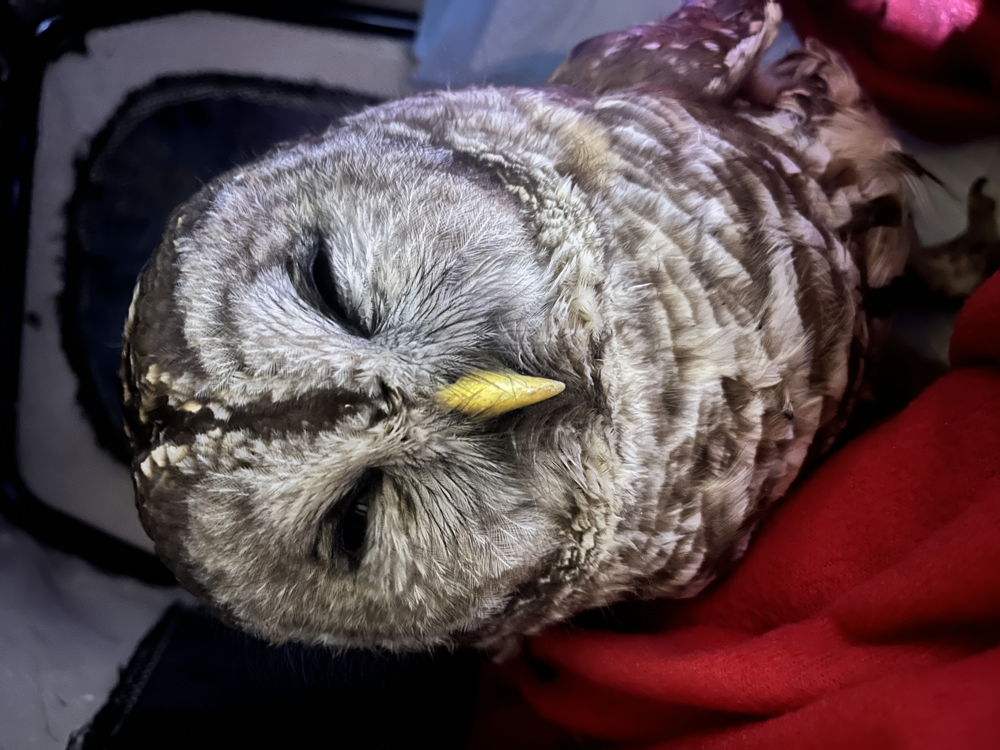
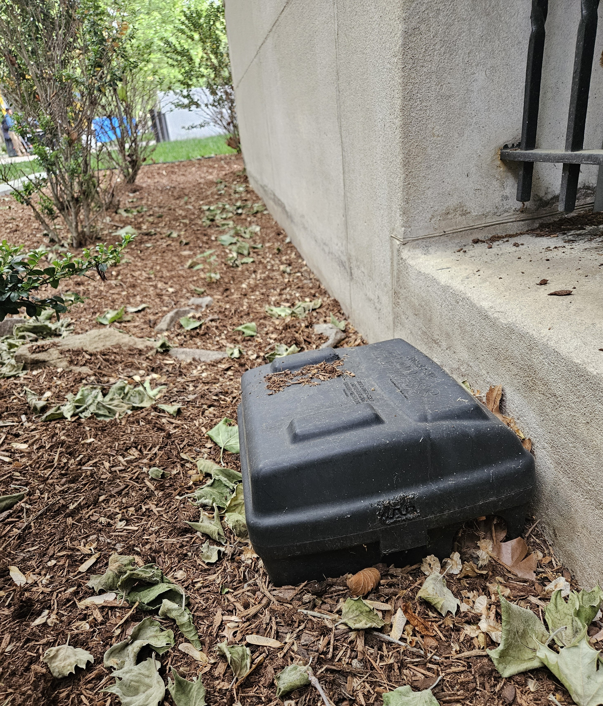

More than 50 years after the U.S. banned the toxic pesticide DDT, another poison is silently killing birds in North America—including on the Yale University campus now celebrating the life of famed conservationist Rachel Carson with a new exhibit: “Silent Springs, Windswept Seas: Rachel Carson’s Environmental Vision.”
Just steps away from the exhibit, and scattered across Yale’s campus, are hundreds of small black rodent bait boxes filled with poisons called second-generation anticoagulant rodenticides (or SGARs) that pose strikingly similar threats to bird populations as DDT. SGARs, like DDT, were designed to conveniently and cheaply solve the practical problem of “pests,” but fail to consider the wider impacts of adding poisons indiscriminately to the food web.
Anticoagulants work by preventing blood from clotting, so rodents that consume SGARs do not die immediately; instead, they become poisoned and weakened, wandering into the open where they become easy prey for raptors and other predators. Rodents who have eaten bait die slow, agonizing deaths from internal bleeding—as do the birds and other wildlife that consume them, poisoned secondarily.
Property owners and pest-control companies use SGARs as a cheap population preventive for rats and mice. Pest companies love them because they can load up boxes with bait without ever having to prove an infestation exists or do the messy work of collecting, removing, or handling dead rodent and wildlife carcasses. That job is left to local wildlife rehabbers, who must treat scores of sickened raptors, foxes, and household pets brought into them with life-threatening conditions.

Carson, in her book A Silent Spring, challenged us to see how poisons released into the environment seldom respect the simplified boundaries imagined for them. She warned us of ill-conceived, short-sighted “pest” control strategies that do not account for the complexity of the food web. Today’s short-sighted approaches are just as deadly as those of the 1960s, resulting in the indiscriminate killing of birds of prey and other wildlife. Instead of safeguarding hawks and owls as our best line of defense against rodents, we kill them with the very foods they are designed to predate on.
In southern Connecticut, birds of prey poisoned by SGARs are often brought for treatment to A Place Called Hope, a state-licensed wildlife rehabilitation center in Killingsworth. By the time a sickened raptor makes it to the clinic, however, it is often too late for them. Last week, an adult Red-tailed Hawk from New Haven (near The Green) was admitted, displaying classic symptoms of anticoagulant overdose and died from excessive bleeding in under an hour. Of the 18 bird carcasses sent for testing by A Place Called a Hope so far this year, 17 were flagged for high levels of anticoagulants, with excessive internal bleeding identified as the cause of death. This included Red Tailed Hawks, Great Horned Owls, a Turkey Vulture, a Barred Owl, and the Eastern Screech Owl.
Visitors to the Beinecke Library this summer should ask themselves: What would Rachel Carson do about all the black bait boxes? Yale’s Carson exhibit should provoke us to consider not just environmental crises of yesteryear, but also wildlife crises happening today—literally at our doorsteps.
Yale’s Carson exhibit offers two more lessons visitors should take to heart: first, environmental harms will often remain hidden from public view until scientists, advocates, the media, and/or concerned citizens bring them to light—and second, powerful forces and business interests that profit from the manufacture, sale, distribution, and/or application of toxic chemicals (including The Mansanto Company in Carson’s day) will fight tooth-and-nail to maintain the status quo. They will confuse the public into believing that without these cheap, easy poisons, we risk human health and the return of the plague. Nothing could be farther from the truth.
Safe alternatives to bait boxes exist. Giving us hope today are the growing number of towns and cities in CT and the Northeast phasing out dangerous SGARs in favor of integrated pest management, which prioritizes sanitation, exclusion, trapping, and targeted interventions. On April 20, 2026, Newtown, CT, made history when their Board of Selectmen unanimously voted to ban the use of SGARs on all municipal properties, to protect wildlife and public health. In 2025 the Fairfield Board of Selectmen, just a year after the New York City Council, approved a pilot study to control local rodent populations with non-toxic Fertility Control products. Hartford’s Bushnell Park also sets a perfect exampleby establishing better sanitation/exclusion practices, utilizing a carbon monoxide sprayer, and adding Fertility Control.
Therefore, inspired by Rachel Carson, we call on property owners and managers in our state to remove the rodent bait boxes from their buildings in favor of bird-safe alternatives. We call on elected leaders across CT to support a state law prohibiting the sale and use of SGARs except in extreme cases. And we ask community members to join us in speaking up for voiceless wildlife in saying, “Enough is enough. It’s time for us to think outside the bait box.”
* * *
Silent Springs, Windswept Seas: Rachel Carson’s Environmental Vision , runs through October 4, at Yale’s Beinecke Rare Book & Manuscript Library.
Meredith Barges (Yale MDiv ’23) is a bird-friendly building policy researcher and advocate. She co-founded Lights Out Connecticut and helped lead the successful state-wide campaign to adopt CT’s mandatory lights out rule for state-owned buildings to protect birds.
Christine Cummings is the co-founder and president of A Place Called Hope, a CT State Licensed Wildlife Rehabilitation Center that deals directly with the consequences of SGAR poisoning in birds. She is a licensed wildlife rehabilitator.
This piece was originally printed on June 15, 2026, in the CT Insider, New Haven Register, Stamford Advocate, Greenwich Time, and The Hour.